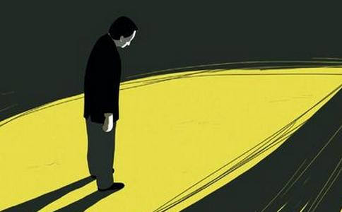

我是一个自医学院毕业就开始从事妇产科工作整整三十年的医生，加上退休后又到私立医院和私人诊所打工五年，前后共计三十五年的时间。这期间，正赶上国家把计划生育列为国策严加实施的时期。所以，妇产科医生的工作三分之一是为正常分娩的产妇服务，三分之一为有各种妇科疾病的妇女服务，三分之一则是对那些计划外不准出生的各个月份胎儿做终止妊娠手术，大肆杀戮，即人工流产、中期引产和大月份引产。
未学佛前，我对这段漫长的充满血腥味的人生麻木不仁，完全不以为然。有时候虽然也会产生一点不人道的想法，但很快就把责任推给社会，推给堕胎的那些父母们，而对自己的行为没有产生过丝毫的害怕、内疚、抱歉和忏悔之心。
学佛后，随着听高僧大德们的讲经说法，看了很多传统文化教育方面的光盘，也听了很多因果报应的实例，我才开始感到自己杀业的严重性，也才知道自己的罪业有多么深重。“上天有好生之德”，佛教导众生：一切罪业中，杀生的罪业最重，而一切杀业中，杀人的罪业又最重。胎儿也是人，而且是毫无反抗能力的人。双手沾满鲜血的我，干的完全是悖尽天理、丧尽天良的杀业。况且，我本人自己曾经堕胎三次，这是为人父母的我，亲手将自己的儿女送上死路。
贪欲炽盛 杀业难止
中峰国师说“诸苦尽从贪欲起”。我的一切苦，验证了这句千古名言。按理说，我干这行干到退休整整三十年，国家给我的退休工资也够吃够用了。但一个贪字害死了我，认为自己有这么一门技术不去赚点钱太不划算了，我这个副高职称就这么丢掉太可惜了。于是，我上昆明照顾母亲的同时，进了一家较大的私立医院打工。
在单位的三十年，我一直认为我们是在为国策做贡献，为国家减少人口而工作。那些堕胎婴灵要怪，只能怪他们的父母，怪政策不准他们出生。对自己有没有背负因果全然不知。事实上，包括我在内的亲手杀害他们的医生护士，怎么可能逃得掉自己那份因果呢？
我的两个孩子智商不低，但总不能把聪明用在学习上。女儿读到高中，儿子读完初中，因学习不好，说什么也不愿读书了，纷纷走上了打工之路。任你怎么教育，一切都等于零。这难道不是我本人堕胎，杀害自己亲生儿女的报应吗？他们能没有怨气吗？何况我还背负着杀众生的重罪，这样重的罪业能让我在教育孩子问题上轻松吗？这就是我的报应之一，但未学佛，丝毫不懂因果报应的我，从来就没有从因果上去领悟，更不要说忏悔了。
开始接触佛法后，由于缺乏善知识指导，误认为念经就是学佛，根本不知道学佛是要学习佛的慈悲，依照佛的教导来改变自己对宇宙人生的错误看法和做法。所以，贪欲炽盛，愚痴无明的我，一边念经念佛，一边仍然干我的老本行造作杀业。我执著地认为自己是凭技术吃饭，老板吃大头，我自己只是领点工资而已，同样把责任推给来堕胎的父母们。
就在我打工的这几年里，果报一次又一次来到我身上，但在贪欲蒙蔽下，我毫不醒悟。
记得有一次，我在医院门诊上班，别的医生请我到楼上会诊一个病人，刚上完楼梯站在平地上，不知为什么，我突然双脚一软，跪在地上起不来。别的医生看见了赶紧过来把我拉起来。我为什么下跪，向谁下跪，全然不知。
还有一次，我梦见自己右手提着一个很大的白色透明塑料袋，袋子大得足够装一床大棉被，里面全部都是赤裸着的胎儿尸体。他们的身体苍白，大大小小，装满了一塑料袋。我把袋口扭紧，用右手提着，也不知道要提到哪里去。这个画面令我终身不忘。醒来后，我根本就没有把这个梦当回事，更谈不上去领悟其中的因果道理，还照常去上班。就在我做梦的第四天，我和母亲到菜市场去买菜，我右手提着两公斤肉，突然踩到一块香蕉皮，一声闷响，我重重地仰面朝天摔在地上，手上的两公斤肉将我的右手拉在背后，整个身子压在右手上。当时，只觉得有一股泰山压顶之力压着我，我根本起不来。右手钻心地疼痛，痛得几乎要使我休克。我母亲在几个卖菜妇女的帮助下，好不容易才把我从地上扶起来，我脸色苍白，右手疼痛难忍，整个肘关节以下很快就肿胀起来，皮肤紫黑，就像一个紫皮萝卜，我知道这是血管断裂内出血的缘故。下午到医院拍片检查，医生说万幸没有骨折，但是骨膜裂开了。这是我在打工时就遭到的报应，但愚痴迷惑的我根本就没有去想想这里面的原因，想想这一跤与四天前的梦境有何联系，与那一次忽然下跪有何联系？梦中我用右手提着堕胎婴儿的尸体，现在受伤的也是右手，这难道是偶然吗？平时我做手术杀人时不也是用右手吗？本来，如果我稍稍有点良知和悟性的话，这样的事是不难把其中的道理悟出来的。然而我这个刚强难化的凡夫完全麻木了，丝毫没有产生害怕的心情，休息了几个月，我又上班去了。
善知识指点迷津 停止杀业
直到母亲去世，我去昆明一个寺院超度母亲，当时寺里是几位九华山来的师父住持，一个四十岁左右的师父看看我的相貌，问我：“你是做什么工作的？”我回答，我是妇产科医生，现在已经退休，来昆明一边照顾母亲，一边打工。没想到师父听后拉下脸来，非常严肃地对我说：“这种工作不能再干了，你看你脸上一点福报都没有。”我说干这行的人很多，不止我一个人啊。师父说，这我不管，你遇到我就是和我有缘，听我一句话，我真心劝你，不能再干了，这种工作就是杀人，会快速消耗你的福报。当时我像个弱智儿一样，还蛮得意地对师父说：“可是现在我已经学佛念佛了啊。”不料师父的脸色更难看了：“唉！你是怎么学佛的？不学佛的人都不能干，学佛人就更不能干这种事了。”之后，师父还给我讲了一些佛教知识，因果报应的道理，我听得似懂非懂，开始感到问题的严重性。因为我知道，一个人的福报没有了，这个人就要死了。我立即辞去了工作，回到楚雄彻底休息了。
安静的生活过了两年，很多医院和诊所来请我重操旧业，我都一一回绝。这中间还是有过一次反复，在贪心驱使下，我以每个月一千元的代价，将自己的副主任医师证借给一个没有营业执照的女孩开办流产引产的诊所。我虽然没有亲自动手杀，但已经犯了助杀的罪过。她在技术上碰到疑难问题打电话来咨询我，我就在电话里指导她，偶尔还到诊所去亲自指导，我这不是犯了教他人杀的罪过吗？我把她送上了一条杀业之路，她的罪和我的罪有何区别？这刀口上的蜜让我越舔越心慌，常常吃不下，睡不宁。虽然后来我痛下决心后，中止了和她的合作关系，可在这件事情上，我背的因果实在是太大了。
业障现前 幡然悔悟
现在，我所造下的诸多恶业果子成熟了，我不接受都不行。我患了能置人于死地的主动脉瓣严重狭窄，而且才发现就心衰，并且是一次接一次心衰，上下楼梯都十分困难，不能做任何重活，整天药物氧气不能间断。我自幼心胸狭窄，瞋恨心很重，虽然不会和人大吵大闹，但常常心里生闷气，一生气就是好几天。人生之道，一道亏，道道亏。回顾退休后这十多年，我同样没有守好老人道，我没有做到性如灰、性如棉，而是越来越坚硬，常常怨恨人。在外面我可以随顺任何人，谁都看得惯，一回到家里就什么都不顺心，看什么都看不顺眼。孩子小的时候，恨他们不努力读书，恨丈夫掌控我的经济，使我不能舒心地用钱。学佛后为了消灾免难，我特别喜欢放生，当得不到他们的支持，还听到他们说难听话时，我就心生怨恨。每次劝他们不要积财伤道，要多布施，多为子孙积累福德，培植善根，招来的都是反对，因此常常心生怨恨。就这样，从小自私狭隘，老是爱生闷气恨人的禀性，硬是气出了心脏病。
现在我明白了，家里诸多的不顺，是自己没有守好女人的道、没有守好老人道，又心胸狭窄，全看别人的不是感召来的。正人先正己，而我只看到别人的过错，不找自己的错。
在全家人还没有真正了解佛法，还没有真正学佛意识的时候，我就向全家宣传学佛和皈依的好处，然后硬把全家都拉去皈依，当时一对双胞胎孙女只有三岁多。皈依以后，我又处处限制他们，这不能吃，那不能做。他们不念经，我就大肆宣传念经念佛有什么好处，拜佛有什么好处，他们一旦念经拜佛，我又在一旁指指点点，这不如法，那不恭敬。连我自己都不知道，从小沉默寡言的我，老了会变得如此唠叨。总之，家里什么都要以我为中心和标准，如果不按照我说的做，我就心生怨恨。有一段时间，搞得全家人和我很对立，非常反感我。对照老人道应该做的一切，我非但没有做到，反而越老越愚蠢。其实，我自己本身学佛就没有学好，自己不观照自己，反省自己，反而去要求别人这样那样，多么可笑又可悲。我丈夫对我的行为尤其反感，叫我“佛教警察”。我现在才明白，我所做的一起，是在破坏和亵渎佛法，我是在佛菩萨脸上抹黑，给念佛人丢脸。在这里我要向全家人忏悔，向佛菩萨忏悔。在家里赶紧先把自己正过来，我相信先把自己的这块地耕耘好了，家里诸多不顺的境界就会慢慢变好。
迟到的忏悔
正所谓业业相牵、果果相连，我得心脏病的另一方面原因，与我的杀业有关。胎儿虽然不会讲话，但他们有神识，虽然没有呼吸，但是有心跳，当你要杀害他的时候，他会十分恐惧，心跳会加速，他父母的心理活动、是谁动手杀了他，他的神识清清楚楚。他离开母体后神识绝不会善罢甘休。他死前心跳加速、恐惧的信息就会影响他母亲和医生的身体，给你种下心脏病的根。所以，现在很多堕胎妇女和妇产科医生都不同程度患了心脏病和精神病。同样是业果相连，我的偷盗行为、不孝敬公婆、不孝敬母亲、不尊敬老师的行为，贪别人钱财，被我伤害过的这些人他们心里会好受吗？这一切都是我种下的恶因，现在让我来尝尝自己酿的苦果，让我尝尝心里不安、睡不好觉的滋味。医生治病，是对症下药，因果报应在我身上，也充分体现了针对我的病症，病因给我送来了相应的果，真是因果报应丝毫不爽啊！我的心脏病能不重吗？
平时，我也经常在佛前忏悔，念忏悔文，向被我伤害过的一切父母师长有缘众生至诚认错忏悔，但总感觉成效不大。我也试图寻找机会能在众人面前忏悔，由于因缘不成熟，一直找不到这样的机会。这次在楚雄打佛七，我冥冥之中感觉到这是佛菩萨为我安排的忏悔机会，此时不忏，更待何时？那天虽然人数不多，事前也没有准备，但在佛力加持下，我终于放下颜面，撕破了这张虚伪的假面具，敢于在众人面前认错忏悔，将长期以来发霉发臭的心灵终于能在阳光下晒晒太阳了。
我也算是学佛十多年的人了，但这十多年来，我一边念佛，一边贪著，一边造恶，而且常生瞋恨我慢，什么都要以我为中心。这种错误颠倒的修行使我根本没有进步，而且病还越来越严重，念佛时妄念如雪花纷飞，有时候甚至越念越烦恼。现在我才知道，不是阿弥陀佛不慈悲，不肯加持我，而是我内心的污垢太深太厚了，它拽着我往下沉。就像瞿老师说的那样—忏悔要敢于认错，要做到不要脸，要把良心翻出来，把自己发霉发臭的灵魂抖出来，要把伪装在躯壳里的罪恶，见不得人的东西都拿出来，一一发露，在阳光下暴晒自己发霉发臭的心灵。要在众多活佛、活菩萨面前，用天理良心，用佛的法水洗刷自己内心深处的污垢。
我也非常明白，我今生的前途只有两个，一个是以坚定的信愿求生极乐世界，另一个就是堕地狱。我知道自己虽然还没有下地狱，但已经是地狱的通缉犯了。我的名字可能早已经列在地狱鬼卒要捉拿的名单上，只是时候不到而已。感恩大慈大悲的阿弥陀佛救我，他像我最信赖的大慈父，越是眼见快要落水的儿女他越要先救度。我祈求佛菩萨多给我在众人面前忏悔的机会，越多越好。我忏悔不求病好，对于病苦我一定要欢欢喜喜、安忍甘受，还债消业。我要至心信乐，依靠阿弥陀佛大慈大悲深重愿力，使我能够顺利往生极乐。
但愿我这迟到的忏悔，能对有缘众生起到一点警示作用，哪怕能唤醒一个人断恶修善，也不枉费我在重病中抖索着双手，艰难写下这些充满血泪的文字。